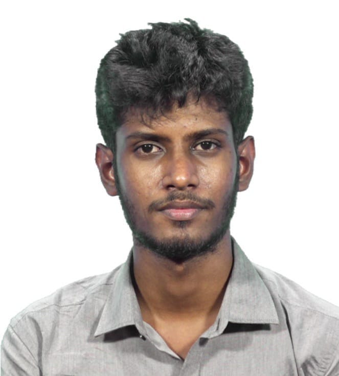

Software Engineer, Machine Learning II at H2O.ai
BSc CSE, University of Moratuwa
Independent researcher in speech & language · Sri Lanka

hover to resolve
I build agentic AI systems at H2O.ai and do independent research on
how language models work internally and on multilingual speech for
low-resource languages — Tamil first. Recent work covers activation patching to localise how
models execute in-context rules, and KuralHub (Interspeech 2026), which maps how
multilingual speech emotion recognition holds up across typologically diverse languages.
Research & engineering
I am a Sri Lankan Tamil engineer and researcher from Mullaitivu, in the Northern Province. I read
Computer Science & Engineering at the University of Moratuwa and now work as a machine learning
engineer at H2O.ai in Colombo, while pursuing independent research toward a thesis-based master's.
Two threads run through the work: understanding what language models actually compute inside, and
making speech technology work for the languages it usually leaves behind — Tamil first.
Interpretability of language models
In Test, then Route I use causal interventions — four-donor activation patching across
three open models and six languages — to study how language models execute in-context conditional
rules. The predicate test turns out to be a separable, language-invariant module; the answer router is a
token-bound readout that does not transfer across label pairs.
Multilingual speech — the next phase of KuralHub
Building on KuralHub, I'm developing a compact ("tiny") model toward a single speech-emotion-recognition
system that works across 29 languages, with the hardest
low-resource cases as the priority — and extending it past speech alone toward more general,
transferable representations. Alongside this I work on Tamil and other Dravidian language technologies.
Engineering
The other half of the work is shipping. At H2O.ai I build agentic AI on h2oGPTe — the tool and
skill layer an agent reaches for, including MCP server integration, and the interfaces that make an
agent's reasoning legible while it runs. The research and the engineering feed each other: knowing how
these models fail internally changes what you build around them.
Test, then Route: How Language Models Execute In-Context Conditional Rules Across Models and Languages
Luxshan Thavarasa, Sivasuthan Sukumar
A four-donor activation-patching study across three open models and six languages. The predicate
test of an in-context conditional is a separable, language-invariant module, while the answer
router is a token-bound readout direction that fails to transfer across label pairs.
Interspeech 2026 Main track · Sydney
KuralHub: Exposing Typological Capability Frontiers in Multilingual Speech Emotion Recognition
Luxshan Thavarasa et al.
Examines how multilingual speech emotion recognition generalises across typologically diverse
languages, identifying where current models reach their capability limits — with direct
implications for low-resource languages. The accompanying release collects SER datasets across
English, Mandarin, Hindi, Spanish, Tamil, Arabic and more, for training and evaluating emotion
models across linguistic and cultural contexts.
Community collaboration of 335 researchers (incl. Luxshan Thavarasa)
A hand-built commonsense-reasoning benchmark across 116 language varieties, 14 language families and
23 writing systems; LLMs lag on lower-resource languages by up to 37%. I contributed curation and
verification of the Sri Lankan Tamil subset.
A multilingual model for abusive-content detection in low-resource, code-mixed text using transfer
learning and multi-head attention. Macro-F1 of 0.79 (Tamil) and 0.71 (Malayalam).
The first emotional speech dataset for Tamil — 936 utterances from 22 native Sri Lankan Tamil
speakers across five emotions (Fleiss' κ = 0.74), with emotion-classification F1 up to 0.91.
Colombo, Sri Lanka · Software Engineering Intern (2023) → Software Engineer (2025) → Machine Learning II (2026)
I work on h2oGPTe, H2O.ai's agentic AI platform. It is a large team product; the notes below are the parts I worked on.
Agent tooling & skills: designed and shipped the agent tool ecosystem from scratch — local and remote MCP (Model Context Protocol) server integration, general tools, and reusable agent skills, with sharing, environment support and workspace association.
Chat sharing & showcase: built the chat-sharing system — link sharing with public/private access control, per-artifact permissions so users choose exactly what travels with a shared conversation, and a choice between a static snapshot and a live view that keeps updating. Shared chats replay interactively. Also shipped the public showcase-chats page.
Making the agent observable: the code-first agent used to return only a final answer. I added intermediate-file and per-turn streaming in the Python backend and designed the React interface that surfaces it — a live file-explorer view and step-by-step code-execution panes — so you can watch it work while it runs.
Earlier work: an internal agentic notebook workspace for data scientists (SQL, Python and text cells with agentic automation); ChurnApp, a customer-churn prediction app for the sales team trained with H2O Driverless AI and deployed via MLOps; and Olympic App, a hackathon platform I built solo that banking customers used for internal AI-upskilling hackathons, reaching 600+ participants.
Standing: Second Class, Upper Division (GPA 3.47). Degree taught entirely in English.
Final-Year Project — Multilingual Universal Speech Emotion Recognition Model: a unified SER model spanning multiple languages; the precursor to KuralHub.
Local-first IELTS-style exam preparation desktop app covering all four papers — speaking, writing, reading and listening.
Runs entirely on your own machine, so practice recordings and essays never leave it — the point being that people preparing for a test they are paying for shouldn't have to hand over their data to rehearse.
Swift package for fully on-device Gemma 4 inference via Google's LiteRT-LM runtime.
Built because no Swift package existed for local LiteRT-LM inference that held up on size, accuracy and speed.
Bridged the C/C++-only API: packaged the prebuilt binary as an xcframework, wired up Metal GPU acceleration, and wrapped the raw C API in a Swift-actor interface with streaming text, multimodal vision and audio input, persistent KV-cache conversations and native function calling. Installs as a single SPM dependency, so users never touch C interop.
On-device iOS accessibility app: a spoken visual memory companion for blind users.
Users photograph a scene and an on-device Gemma 4 vision model speaks a description back in about 20 seconds; a voice interface later recalls stored memories conversationally.
Runs fully offline after model download, with no cloud service and no accounts; stored data is encrypted with AES-GCM.
React, FastAPI, Node.js / Express, SwiftUI, PostgreSQL, MongoDB, MySQL
Cloud & DevOps
Docker, AWS EC2, Git, GitHub Actions, MLOps
Awards & service
2026Selected for Anthropic's Claude for Open Source Program, in recognition of open-source contributions.
2026Interspeech 2026 — paper accepted to the main track.
2025Reviewer, DravidianLangTech @ NAACL 2025.
2025Peer-reviewed papers at COLING 2025 and NAACL 2025 workshops.
2021Mahapola Scholarship for undergraduate studies, Government of Sri Lanka.
2018All-Island Mathematics Competition — 2nd Runner-Up, Northern Province team.
Certifications
2025Fundamentals of Deep Learning — NVIDIA Deep Learning Institute. Verify
2024Large Language Models (LLMs), Level 1 — H2O.ai.
2024Machine Learning A–Z — Udemy.
2023Meta Front-End Developer — Coursera. Seven-course professional track: Advanced React, React Basics, Programming with JavaScript, HTML & CSS in Depth, Version Control, Introduction to Front-End Development, and Foundations of UX Design. Verify
Contact
Open to research collaborations and to thesis-based graduate (MASc/MSc) opportunities in speech and
language processing, interpretability, and low-resource language technology. Email is the fastest way
to reach me.